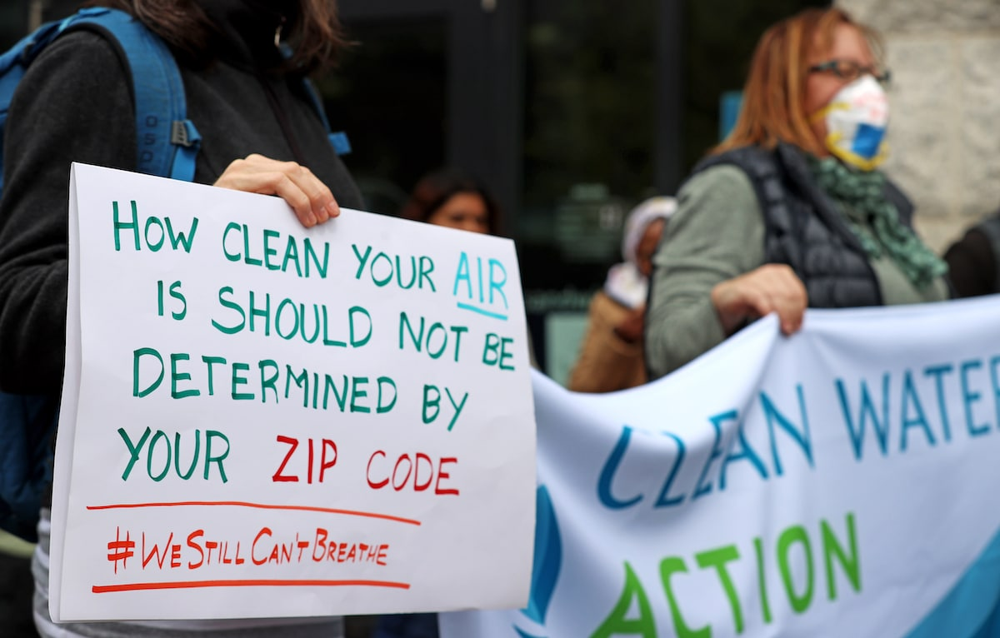

Grenergy Editorial Research
Published November 1, 2023
While we all feel the affects of climate change, it's undeniable that marginalized communities suffer especially due to lack of funding.
Advocating for green energy and environmental justice are based on the principles of equity and fairness, and the belief that all people, regardless of race or other socioeconomic factors, should have access to a healthy and clean environment. Unfortunately, vulnerable communities, such as communities of color or low-income groups, often suffer disproportionately from pollution and other negative environmental consequences. This can be due to living in areas with poorly maintained infrastructure, having limited financial resources, and greater rates of existing medical conditions that are worsened by climate change. For example, African Americans are 40% more likely to currently live in areas with the highest projected increases in extreme temperature related deaths. This rises to 59% under 4°C of global warming.
When we advocate for green energy, we must also advocate for marginalized communities. New technologies such as wind, solar, and hydroelectric power, can lessen the burden on these communities which are affected by pollution from traditional energy sources. It can also foster economic development by creating new jobs in areas that are reliant on the fossil fuel industry.
As we confront the realities of climate change, we must prioritize sustainable and equitable solutions that can benefit all. Our work will benefit the present and future generations, ensuring our and their access to a healthy life and environment. Here are a few ways that you can get involved with green initiatives:
• Look for local, state, and regional leaders. Start with the National Environmental Justice Advisory Council member list.
• Get involved in community gardens and other green spaces, such as by planting trees.
• Invest in solar energy, water recycling, and other options to lower energy costs and your carbon footprint.